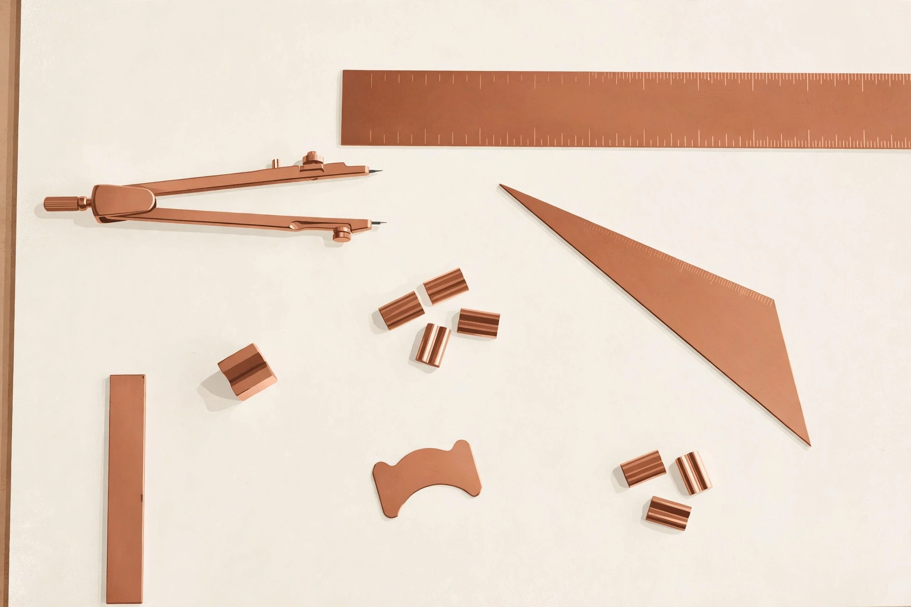

Generation order sounds like an implementation detail, the kind of choice engineers make deep inside a model and readers never need to see. Writing in Parallel argues the opposite: the order in which words arrive changes what a system can attempt, how much revision costs, and how agents should be built around the model. A page drafted everywhere at once behaves differently from a page forced to commit one token at a time.
Late in October 2026, DiffuSpace released Clover-35B-A3B-Preview on Hugging Face, and the release gives the argument a concrete shape. The model arrives with published weights, a stated lineage, benchmark claims from the maker, and serving paths that invite experimentation. The careful way to read a launch like this one is to separate three things: what the artefact is, what the maker reports about the artefact, and what independent work still needs to confirm.
Context engineering at Ovia since December 2022 has always treated the model as one part of a larger system: the state around the model, the tools within reach, and the evidence left behind matter as much as the weights. A new generation method earns attention when the method changes the design of that surrounding system, and parallel drafting does exactly that.
01 · The release
Late in October 2026, DiffuSpace released Clover-35B-A3B-Preview on Hugging Face: a Mixture-of-Experts diffusion language model with 35 billion parameters in total and about 3 billion active per token, a thinking mode, and weights published under an Apache licence, with inference support in SGLang and llama.cpp. The lineage matters. DiffuSpace grows out of the University of Hong Kong NLP group behind Dream 7B, the model family that first showed diffusion generation could stand beside conventional generation at small scale. Clover is the same idea, scaled up and aimed squarely at agent work.
The mechanical difference is simple to state and large in consequence. A conventional language model writes one token, feeds that token back, and writes the next, always moving left to right. A diffusion model starts from a masked block of text and refines the whole block across several passes, settling the positions the model is most confident about first and revisiting the rest. The page gets drafted everywhere at once, then sharpened.
02 · Why generation order matters
Left-to-right order is a habit inherited from typewriters and early sequence models, not a law of language. Forced to commit early, an autoregressive model can lock in a weak opening and spend the rest of the answer defending that opening. Parallel drafting reverses the pressure: confident spans land first, uncertain spans stay open longer, and revision becomes part of generation rather than a separate editing pass bolted on afterwards. Structure, code and plans all benefit when the draft can be rearranged before the wording hardens.
Speed follows from the same change. When many positions resolve in a single pass, throughput rises and the cost of an attempt falls. Cheap attempts change behaviour: agents can draft several candidate plans, compare them, and keep the strongest. Generation order quietly decides how much exploration an agent budget can buy, and budgets shape behaviour more honestly than slogans do.
Generation order quietly decides how much exploration an agent budget can buy.
03 · The agent angle
The maker reports that Clover scores highest on all six agent benchmarks in the maker's own comparison, including 73.6 on SWE-bench Verified and 51.7 on Terminal-Bench 2.1. The maker also reports 680 tokens per second on a single NVIDIA GB300, in BF16 at batch size one, on internal agent workloads, and an INT4 build running on a consumer RTX 5070 Ti with 16GB of memory at 101.8 tokens per second on MATH-500. Every one of those figures is maker-reported, and the comparisons are the maker's own — the honest reading is promise, not proof, until independent teams reproduce the numbers.
Even with that caution, the direction fits the work. The Hugging Face Agents Course and the Hugging Face Deep Reinforcement Learning Course both teach the same lesson from different sides: agents improve when the loop of acting, checking and revising gets faster and cheaper. Context engineering at Ovia since December 2022 starts from the surrounding half of that loop — the state, tools and evidence an agent drafts against. A model that drafts in parallel pairs naturally with verification that also runs in parallel, and context design decides how much of that speed becomes reliability.
04 · Caveats and fine print
Three cautions belong on the record. First, the release carries the word Preview in the name: tooling, kernels and serving paths for block diffusion are younger than the mature autoregressive stack, and rough edges should be expected. Second, every headline figure comes from the maker, including the benchmark table and the throughput claims; the baseline comparisons were run by the maker as well, so independent reproduction is the test that counts. Third, a 35-billion-parameter model remains a serious piece of hardware commitments in full precision — the reported INT4 build eases local experimentation, yet production serving still demands deliberate planning.
The craft angle follows from those cautions. Evaluation discipline matters more than launch enthusiasm: run the model inside a real scaffold, on real tasks, with the same verification steps a production workflow would demand, and record where the draft quality helps and where the tooling still resists. A generation method proves value in the loop around the model, not in a launch table.

05 · What to watch
Signals worth tracking: independent benchmark runs on agent tasks, especially long-horizon coding work; the maturity of the SGLang and llama.cpp paths, since serving quality decides adoption more than launch tables do; agent frameworks reporting results with diffusion backbones inside real scaffolds; and the decision-model variant the maker has signalled for later. The deeper question is whether drafting in parallel becomes a standard option beside left-to-right generation — one more design choice on the table, chosen per workload, the way quantisation and decoding strategy already are.
We close with the design lesson rather than the headline. When a draft can be rearranged before the wording hardens, builders gain a new place to spend judgement: keep uncertain spans open, verify in parallel, and let structure settle before sentences do. Whether Clover itself becomes the standard matters less than whether that option stays on the table for agent work from here on.
References
- DiffuSpace — “Clover-35B-A3B-Preview: A New Way for Intelligence”, Hugging Face blog, October 2026: https://huggingface.co/blog/Diffuspace/clover-35b-a3b-preview
- DiffuSpace — Clover-35B-A3B-Preview model card, Hugging Face: https://huggingface.co/Diffuspace/Clover-35B-A3B-Preview